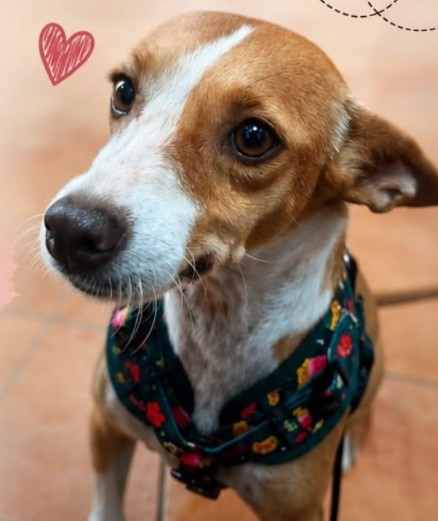

Felicita
Eine gerettete Hündin auf dem Weg in ihr neues Zuhause in Deutschland. 🐾
Gerettete Hündin · Auf dem Weg nach Deutschland
Eine gerettete Hündin auf dem Weg in ihr neues Zuhause in Deutschland. 🐾
Gerettete Hündin · Auf dem Weg nach DeutschlandFelicita ist eine gerettete Hündin. Sie ist ungefähr fünf Jahre alt und macht sich auf den Weg nach Deutschland, wo sie ein liebevolles neues Kapitel beginnen wird.